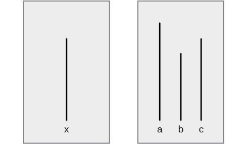
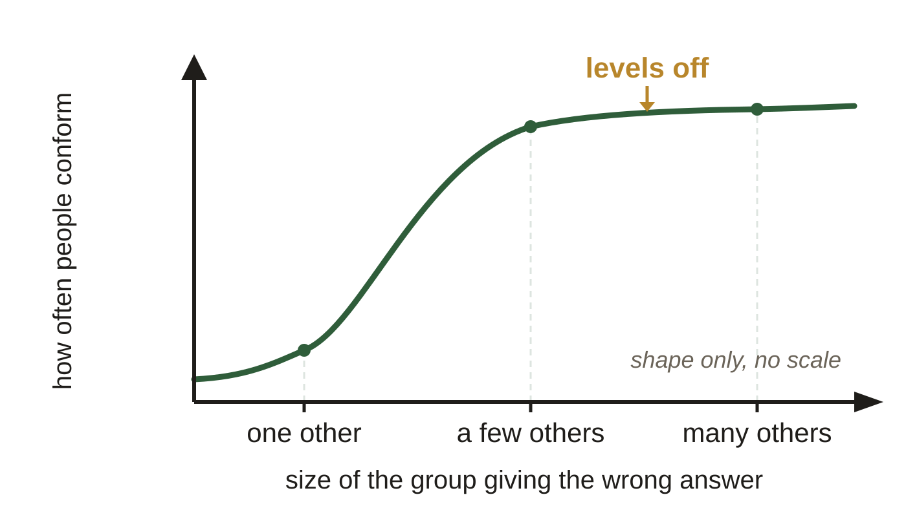
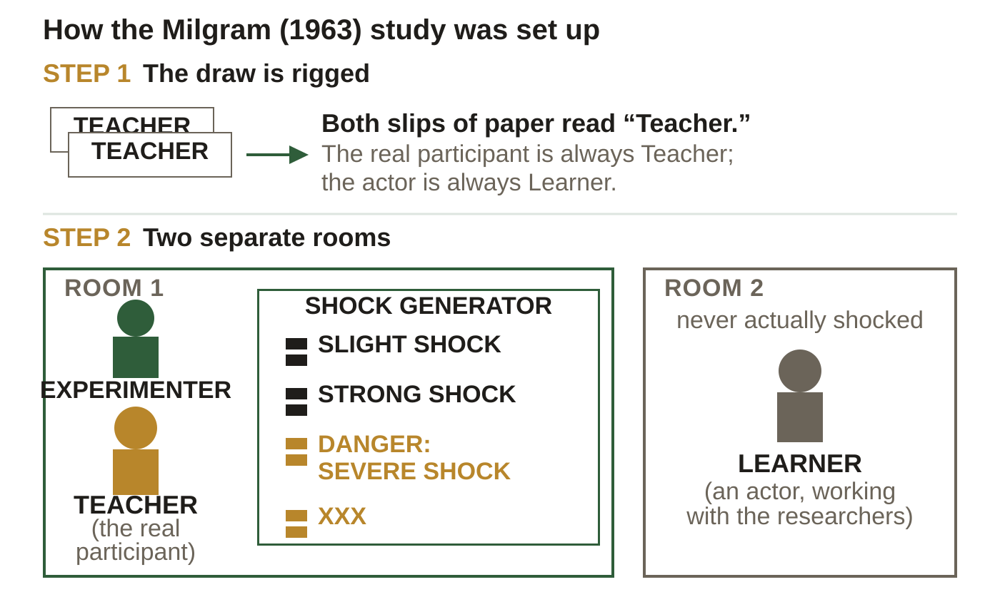
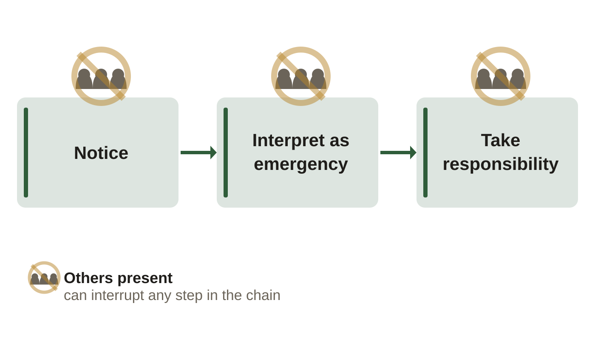
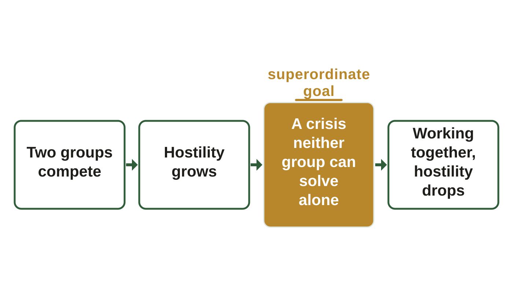
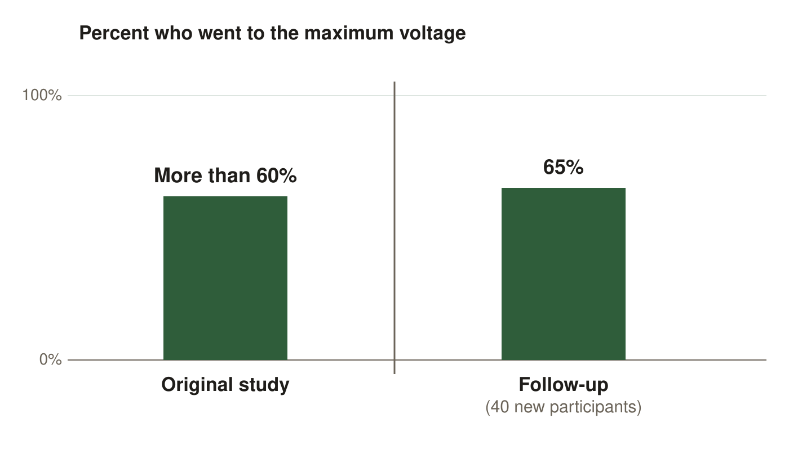

Psychology of social situations. These are the same figures as in your Class Notes, in the same order. If a figure in your notes shows as a gray box, use this page instead.
Slide 8. Asch and the Lines

The judgment task: standard line X on the left, comparison lines A, B and C on the right. OpenStax, Psychology 2e, Figure 12.17, CC BY 4.0
Slide 11. What Turns Conformity Up (continued)

Shape only, no scale. Adding people raises conformity at first, then stops mattering.
Slide 12. Obedience: The Claim

The rigged draw, and the two rooms.
Slide 22. What It Shows (continued)

Latané and Darley's three-step chain. The badge means the same thing above every card: others present can interrupt that step, so the presence of other people can block noticing, or interpreting it as an emergency, not only taking responsibility.
Slide 35. The Way Out of a Conflict

The four steps, with the superordinate goal third.
Slide 37. Obedience Is a Rate

Both bars use the same criterion, going to the maximum voltage. The follow-up was a new group of 40 participants, not a retest of the first.